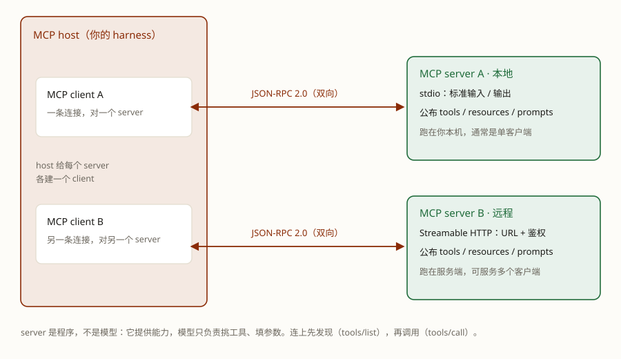

我们平时使用 agent 软件时，安装工具很简单。不过这些工具通常不叫工具，叫 skill 技能或者 MCP 工具（有些软件叫应用连接）。技能我们暂且不论，MCP 又是什么东西？名字听起来奇奇怪怪的，它和你在第 2 课编写的工具函数又有什么区别呢？
学完这课，你能：说清 MCP 工具和自己写的工具函数有什么区别；运行 MCP 工具时，后台到底发生了什么；看懂配置里每一行在说什么；知道去哪找别人写好的工具，也分得清它和「技能」不是一回事。
MCP 是给工具定的一套统一插口。装一个 MCP 工具，就是让你的 agent 接上一个别人写好的程序。
在第 2 课里，我们写了一个最小的 agent，同时还写了一个查询天气的工具函数。我们在每次调用模型 API 时，需要把工具描述放进请求的工具清单里，告诉模型有哪些工具可用；当模型决定要调用工具时，响应会多一个 tool_calls 字段。我们解析这个字段，获取要调用工具的名称和参数，真正执行调用的是我们自己写的代码。
但是如果我们还想要查询网页，则要写查询网页的工具，想要获取当前时间，还要写获取时间的工具，我们不可能一个人写所有的工具。而且每个人的需求也不一样，我们也不可能满足所有人的需求。
最简单的办法是让 agent 和工具解耦合，任何人都可以写工具，我们只需要把别人写的工具接进来。「接」进来说起来容易，但是要实现有点麻烦。因为是别人写的，所以我们对工具一无所知，不知道是 Python 脚本还是 exe 程序，也不知道存放在哪里。那该怎么接呢？主要有两种思路：
所以，到底什么是 MCP 呢？MCP 的全名叫 Model Context Protocol（模型上下文协议），是 Anthropic 在 2024 年 11 月发布的一套开放标准。开发工具的程序员只需要按照这套标准开发工具，所有同样支持 MCP 协议的 AI 软件——比如 OpenCode、TeleAgent、WorkBuddy——都可以接入这个工具。这类软件统称 harness 软件（第 1 课讲过这个词），后文都这么叫。MCP 自己的文档拿 USB-C 打了个比方：MCP 之于 AI 应用，就像 USB-C 之于电子设备。USB-C 统一了怎么插，MCP 统一了怎么接。
实际上，MCP 整体架构比我们自己编写的 Python 脚本要复杂很多。它由三个部分组成：
host 是你正在用的那个 harness 软件。
server 是一个服务器程序，工具的载体，它对外提供 API，harness 软件通过 API 来调用执行工具并获取工具执行结果。server 可以在本地，也可以在远程。
client 是中间的连接件。host 每接一个 server，就在内部启动一个 client 对象，client 和 server 是一对一的关系；一个 host 常常同时接着好几个 server，每条连接各有一个 client，互不掺和。client 装好就有，不用你写。

因为 MCP server 本质上是一个服务器，所以当你安装完 MCP 工具以后，通常还要点一下启动（或者连接按钮），才能真正使用。
连接建好之后，client 会先问 server「你能干什么」。server 回一份工具清单：每样工具叫什么、干什么用、要填哪些参数。host 拿到工具清单后，会把它注册到一张表里——可以把它理解成一张工具注册表。之后每次向模型发送请求，都会把工具注册表里的工具描述放进请求的工具清单（第 2 课的 tools 字段），随请求一起发给模型。
MCP 不光能暴露工具，还能公布 资源（resources）和 提示词（prompts），所谓资源，也就是各种数据：文件、数据库记录。提示词（prompts），就是写好的各种提示词模板，不过这两种平时用得不多，大家知道就行。
client 和 server 一问一答的标准协议叫 JSON-RPC 2.0（请求带方法名，回结果）。协议是无状态的：每个请求自带协议版本和这次要用的功能，server 不靠「上一次连接」猜。工具清单支持订阅，server 那边增删了工具，会主动通知 client 去刷新。
因为 server 本质上就是个服务器，对外提供 API，所以 server 不光可以跑在你的电脑上，也可以部署在远程。只不过和普通 API 相比，MCP 不是给程序员用的，是给 AI 用的。
MCP 协议也包含相应的鉴权机制。
如果你是程序员，想要开发自己的 MCP 工具或者想让自己开发的 harness 软件支持 MCP，不需要研究底层协议标准，官方提供了各种语言的 SDK（软件开发工具包），大大简化了 MCP 的开发。
安装和配置 MCP 工具稍微有点麻烦。首先需要到 MCP 社区查找你想安装的工具，以下是一些常见的社区：
进入社区，点击你想安装的 MCP，服务配置部分就是安装说明。一般有 Remote 和 Stdio 两种，Remote 就是服务器部署在远程，Stdio 就是服务器运行在自己机器。两种配置都会给你一段 JSON 文本，类似：
{
"mcpServers": {
"fetch": {
"args": ["mcp-server-fetch"],
"command": "uvx"
}
}
}上面这份是 Stdio 的配置：command 写启动命令，args 是参数。Remote 的配置长另一副样子：填服务的 URL 地址，启用了鉴权的还要带上授权信息——没有 command，也不用 uvx。
你需要粘贴到自己 harness 软件的配置文件里面去。以 TeleAgent 为例，点击「设置」→「工具设置」，可以看到 MCP 工具的配置页面。点击「从 JSON 导入/添加」，会弹出一个文本框，把 JSON 文本粘贴进去，然后点击「保存 MCP 服务器」就可以了。点击以后可以看到服务器显示连接中的状态，等一会儿，如果服务器正常启动，会显示绿色的「已连接」标签。
这里的 uvx 是 uv（一个 Python 包与项目管理工具）的一个命令，说明这个 MCP 工具是用 Python 语言写的，如果要安装这个 MCP 工具，需要先安装 uv。另外比较常见的命令是 npx，那个是 Node.js（JavaScript 的一个运行时环境）的命令，说明该工具是用 JavaScript 写的，你需要先安装 Node.js。当然，如果你嫌麻烦，也可以把 MCP 工具的 URL 地址告诉 AI，让它帮你安装——通常的 harness 都能这么装，不限于哪一家。
Q1 把别人写的工具接进 agent，两种思路里 MCP 选的是哪条？
Q2 MCP 统一的是什么？
Q3 连接建好之后，做的第一件事是什么？
Q4 装好 MCP 工具之后，模型是怎么知道自己手里有哪些工具的？
Q5 远程 MCP 的配置和本地的差在哪？
MCP 给的是能力：一件干活的工具。这类东西更常见的叫法是 skill 技能，给的是做法：教 agent 一件具体的事该怎么做，下一课我们就介绍。
前置：Agent 篇 · 第 2 课 · 手写一个 agent（上一课把工具写成了能跑的代码）
顺着往下：Agent 篇 · 第 4 课 · Skill：把做法打包成文件（技能是什么、它和应用连接的区别）
安全：Agent 篇 · 第 6 课 · 提示词注入与护栏（装工具之前要过的安全关）
速查：MCP 配置速查（字段说明、远程例子、配置查错）
术语表：工具 · MCP · 上下文